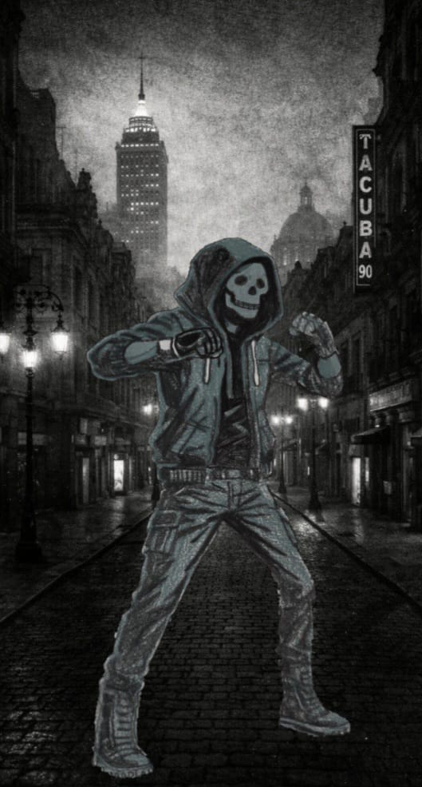

"En una ciudad donde la justicia es un privilegio, el silencio es la única sentencia."

Gael Arias Cantú era un joven de clase trabajadora en la Ciudad de México hasta que la desaparición de su novia lo cambió todo. Señalado injustamente como el principal sospechoso y abandonado por las instituciones, Gael deja atrás su inocencia para buscar la verdad por su cuenta.
Bajo el alias de "El Castigo", recorre las calles no por una venganza ciega, sino por un deber autoimpuesto: evitar que otras familias vivan la misma pérdida y proteger a quienes no tienen voz.
No es un accesorio de violencia, es un recordatorio. Su máscara de látex representa el fin del pasado: la muerte del joven que alguna vez creyó en el sistema. También es el espejo del miedo: enfrentar la oscuridad proyectándola hacia los culpables. Y finalmente la igualdad absoluta: ante la muerte no existen jerarquías, todos somos igual de frágiles.
Fuera de las sombras, Gael es un hombre marcado por el insomnio y el estigma social. Pero al ponerse la máscara, se transforma en una presencia implacable y silenciosa. No es el héroe que la ciudad quiere, es la consecuencia que los culpables temen.